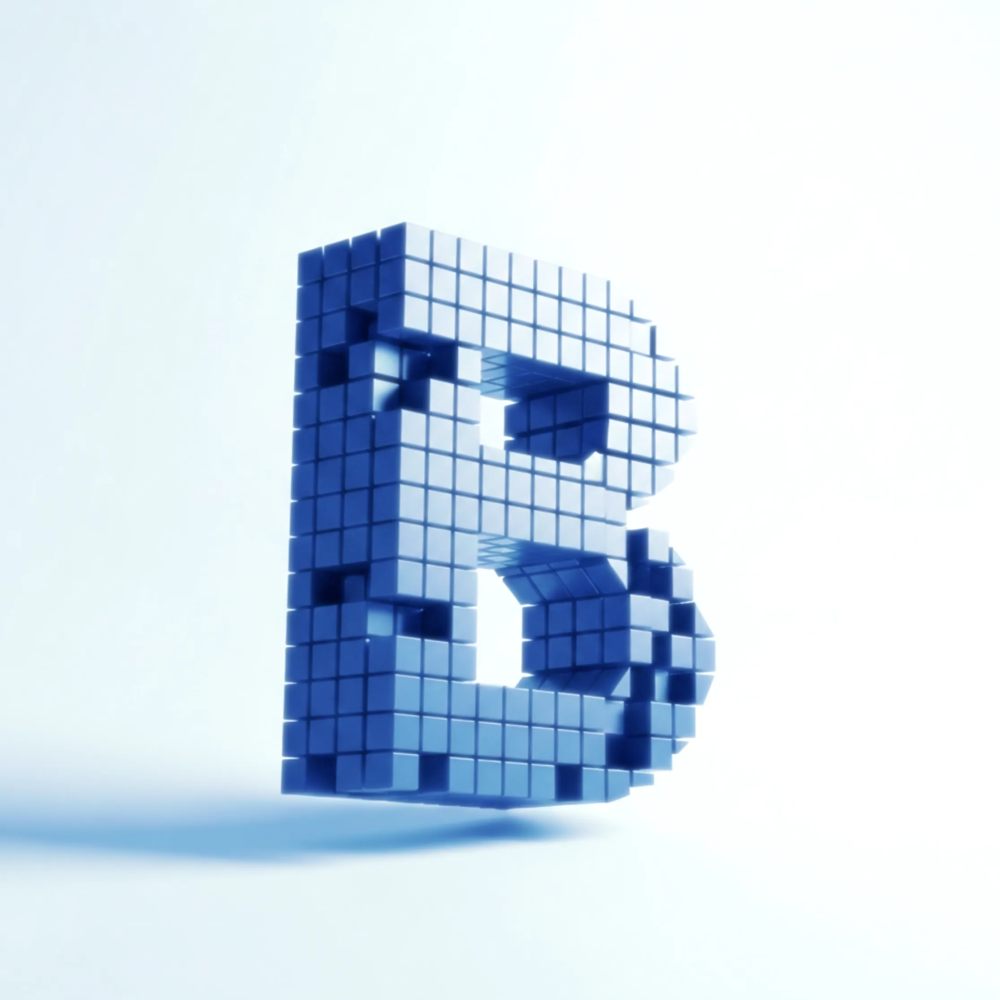

Public repositories
Core, canon, atlas, proteomics, pollenomics, masterclass, and GNSS are all visible as separate public products under the GitHub bijux namespace.

bijux platform
Contract-first systems for runtime, data, and scientific workflows
Updated Platform Map | April 2026
One operator, one coherent ecosystem: runtime infrastructure, governed AI systems, bioinformatics platforms, and technical education built to stay legible in public.
The center is bijux-core: a runtime and governance backbone for command execution, pipeline semantics, evidence, and release discipline. Around it sit flagship systems with their own gravity: bijux-canon for governed AI and knowledge workflows, bijux-atlas for data delivery, bijux-proteomics for discovery acceleration, bijux-genomics as a private execution platform, bijux-pollenomics for evidence-driven site selection, bijux-masterclass for deep technical education, and bijux-gnss as the next systems frontier.
This homepage should answer four questions quickly: what bijux is, which systems are public today, what remains private or emerging, and why the overall body of work matters to engineering leaders, scientific collaborators, and product-minded technical teams.
Start here
A strong homepage should not force visitors to reverse-engineer where to click next. These are the fastest routes into source code, docs, published packages, and direct maintainer contact.
See how the public repositories are separated, named, and maintained as product surfaces instead of miscellaneous experiments.
Open GitHub DocumentationUse the bijux-core docs as the fastest way to understand the execution model, release discipline, and platform thesis.
Evaluate the ecosystem through the registries where public release discipline becomes visible, versioned, and easy to verify.
Open package inventory MaintainerUse email when you want to discuss collaboration, serious evaluation, or the direction of the platform in more detail.
Email bijuxProof
Good presentation should not rely on adjectives alone. The ecosystem already exposes enough public proof across repositories, docs, packages, crates, and course surfaces to show real execution depth.
Core, canon, atlas, proteomics, pollenomics, masterclass, and GNSS are all visible as separate public products under the GitHub bijux namespace.
Core, canon, atlas, proteomics, and pollenomics already have dedicated docs sites that extend the product story beyond source code listings.
The package line already spans runtime, agentic systems, knowledge systems, and proteomics layers, showing breadth with real published interfaces rather than private claims.
The learning surface already covers both Python engineering and reproducible science with individual course pages that make the educational line concrete and revisitable.
Why bijux
The recurring idea behind bijux is simple: difficult technical work should become easier to reason about without being made intellectually shallow. That is why runtime execution, product surfaces, documentation, and teaching are all treated as parts of the same system.
Good abstractions reduce operational burden without hiding the mechanics that matter for reliability, scientific traceability, or governance.
Execution, evidence, package boundaries, documentation, and release surfaces should stay understandable long after the first version ships.
Masterclass is not detached from the products. It exists so the same models can be learned, reused, and applied by others with real depth.
Bioinformatics, AI systems, scientific automation, and GNSS all reward engineering that is explicit, careful, and durable under complexity.
Positioning
The value of bijux is not only that the repositories exist. The value is that the same engineering discipline appears repeatedly across runtime systems, governed AI, scientific execution, data products, and education. That consistency is what makes the whole portfolio persuasive.
Control planes, release contracts, execution semantics, diagnostics, evidence, and lifecycle discipline are treated as first-class product concerns rather than invisible internal plumbing.
Canon is not framed as generic agent tooling. It is framed as a governed ingest, index, runtime, reasoning, and agentic system with clearer trust boundaries and inspectable execution.
Genomics, proteomics, atlas, and pollenomics turn scientific and field workflows into coherent product surfaces with runtime discipline, documentation, and clear operating models.
The portfolio reads across software engineering, platform engineering, AI systems, data-intensive products, reproducible research, and scientific computing without collapsing into a shallow collection of demos.
Platform model
bijux-core is the engineering center of gravity. Around it sit focused systems that solve adjacent but different problems: governed AI workflows, data delivery, proteomics acceleration, private genomics execution, evidence-led site selection, deep technical education, and GNSS receiver software. The point is not repo sprawl; the point is one platform thesis expressed across several product lines.
The runtime, DAG engine, evidence model, release contracts, and maintainer control plane now belong to one canonical repository and one coherent public story.
consolidation: bijux-cli + bijux-dag now presented as bijux-core
The surrounding systems are not side notes. They are distinct products with their own technical meaning, made legible through shared engineering discipline and sharper product boundaries.
consolidation: bijux-rag, bijux-rar, bijux-vex, bijux-agent, and agentic-flows now read as the canon product family
The overall shape is straightforward: core provides the execution and governance spine, flagship repos apply it to domain problems, masterclass teaches the underlying ideas, and GNSS extends the systems work into a fresh domain still being built.
github.com/bijux |- bijux-core |- bijux-canon |- bijux-atlas |- bijux-proteomics |- bijux-pollenomics |- bijux-masterclass |- bijux-gnss (in progress) |- bijux.github.io `- bijux-genomics (private)
bijux-core to executionCore defines the runtime, DAG, evidence, replay, and governance model that makes execution legible across the rest of the ecosystem.
bijux-core to productsCanon, atlas, proteomics, genomics, and pollenomics each apply that discipline to a different product problem instead of reinventing their own control plane.
bijux-core to educationMasterclass translates the same engineering values into teaching, while GNSS extends the platform thesis into a fresh systems domain still under construction.
Release radar
The portfolio is strongest when its public-state boundaries are explicit. Some systems are fully public and followable now, some are clearly moving toward a public milestone, some remain private by design, and some are early but intentionally visible.
bijux-core, bijux-canon, bijux-atlas, bijux-proteomics, bijux-pollenomics, and bijux-masterclass are the public flagship surfaces to follow today.
bijux-dag is the clearest upcoming public milestone inside the core line, with the public DAG surface targeted for v0.4.0.
bijux-genomics remains private, and the page treats it as a model and direction of travel rather than pretending it is already a public surface.
bijux-gnss is public as a repository and intentional as a direction, while still being honest about the fact that it is in progress.
Products
These are presented as products first. The purpose of this page is not only to document them accurately, but to show why each one deserves attention from engineering leaders, product-minded technical teams, and scientific organizations that value disciplined systems work.
Center


Best for: teams that need a serious runtime backbone for governed execution, evidence, release control, and pipeline lifecycle management.
bijux-core is the canonical runtime and governance backbone of the ecosystem. It joins the operator-facing CLI and the DAG/evidence engine into one source of truth so execution, replay, release evidence, and maintainer workflows stay aligned at repository scale.
bijux-clibijux-dag is the upcoming public DAG surface targeted for v0.4.0. The shortest serious description is: Git for pipelines. Not just pipeline execution, but pipeline identity, replay, diff, lineage, and semantic understanding of change, expressed as a durable operational model rather than a thin wrapper around task scheduling.
Why it matters: this is the system the rest of the platform is designed to orbit around, and the DAG line has the potential to become a reference model for pipeline change semantics, reproducibility, and release-grade execution control.


Best for: organizations that want retrieval, reasoning, and agentic systems treated as governed runtime infrastructure instead of ad hoc prompt wiring.
bijux-canon is the governed AI and knowledge system in the ecosystem. It is organized around ingest, index, runtime, reasoning, and agentic execution as separate but coherent layers so the system can grow without becoming opaque.
Why it matters: it turns fragmented RAG and agent tooling into a governed systems architecture with clearer trust boundaries, better runtime legibility, and a much stronger long-term platform story.
Flagship domain systems

Best for: groups that need ingest, service delivery, APIs, and operator tooling to behave like one coherent data product.
bijux-atlas presents a complete delivery story for genomics datasets: ingest, server, API, and CLI all treated as one product surface rather than disconnected tools. It reads like a data platform, not a utility bundle, and it shows that data delivery can be designed with the same rigor as runtime software.
Why it matters: it shows what a disciplined data product looks like when ingest, serving, APIs, and operations are designed together from the start instead of patched together later.


Best for: scientific and discovery teams that want software, intelligence, and lab planning represented as one acceleration system instead of disconnected analysis layers.
bijux-proteomics is built as an engineering system for accelerating drug-discovery workflows, not as a single narrow package. It connects runtime execution, domain core, knowledge, intelligence, and lab planning into one coherent stack with real product ambition and a clear translation path from software architecture into scientific decision support.
Why it matters: it frames discovery work as a full-stack software, intelligence, and platform problem rather than a disconnected sequence of scripts, notebooks, and handoffs.
Best for: pipeline-heavy bioinformatics environments that need to collapse operational complexity without losing execution rigor, policy control, or reproducibility.
bijux-genomics is still private, and it should be presented that way. The important point is the model: a genomics execution platform designed to reduce pipeline definition to two YAML files, one for the DAG and one for configuration and policy, while keeping the underlying execution, governance, and environment layers rigorous.
Why it matters: this is the clearest expression of the platform's bioinformatics simplification philosophy, even before public release, and it shows how deeply the runtime ideas can travel into domain execution.
Best for: evidence-led site selection, regional synthesis, and fieldwork planning where map context, biological signals, and archaeological context need to stay in one view.
bijux-pollenomics is not presented here as a published package, because that would be inaccurate. What matters today is the product idea: a visual evidence surface for the Nordic region where archaeology, eDNA, aDNA, and pollenomics context converge into one map-driven site-selection story.
A concrete example is the Lyngsjön Lake fieldwork page, which documents the iced-lake fieldwork itself with photo and video from on-site collection and makes the system feel anchored in real sampling practice rather than abstract mapping.
Why it matters: it points toward a more practical way to choose sampling locations from real evidence coverage, field documentation, and region-specific context instead of relying only on disconnected literature intuition.
Surfaces
The badge map below makes the public surface area explicit: source repositories, docs sites, Python packages, Rust crates, and course pages. This is the discoverability layer of the platform, and it needs to be clear, indexable, easy to trust, and easy to revisit.
These are the live public repositories visible from the GitHub namespace today. bijux-genomics is intentionally not listed here because it remains private.
The docs sites are part of the public product surface, not afterthoughts. They should read as release-grade interfaces to the systems.


The Python side spans runtime, agentic, knowledge, domain, and scientific application layers across the public products. bijux-pollenomics is intentionally excluded here because it is not yet published as a package.


These names are still important as continuity surfaces, but they should be read as compatibility and transition lines rather than the primary current product naming model.
The public Rust crate line is currently anchored by bijux-cli and bijux-atlas, with the broader core runtime family still more legible through repository and docs surfaces than through crates.io alone.
Learning
The masterclass is meant to give learners around the world access to real depth: software engineering, workflow systems, and scientific reproducibility taught without shallow shortcuts or misleading simplifications. The intention is not to decorate learners with vocabulary, but to give them the technical substance they actually need to build durable judgment.
The masterclass is part of the same platform philosophy as the software: explicit models, precise language, reproducible practice, and a preference for substance over buzzword fluency.
This path is structured to move from object models to functional style to meta-programming so learners build a stronger mental model of the language rather than collecting framework recipes.
python-programming -> object-oriented -> functional -> meta-programming
This path is structured to move from workflow fundamentals into tool-specific depth so reproducibility becomes an operating model for collaborative technical work.
reproducible-research -> make -> snakemake -> dvc
This path is for engineers who want deep command of Python as a language and runtime, not just framework familiarity or framework-specific habits. It is designed to reward serious learners who want transferable software engineering judgment.
Outcome: a deeper command of Python abstraction, runtime behavior, and software design choices that transfer across real engineering work.
This path is for learners who need serious workflow and automation discipline for data-intensive and scientific work, where reproducibility is operational, not decorative. It is especially relevant for research engineering, bioinformatics, and automation-heavy teams.
Outcome: a stronger operational model for building reproducible workflows, automation layers, and scientific delivery systems that survive real collaboration.
In progress
GNSS is still under active construction, but it belongs in the story. It grows out of prior GNSS receiver-system work, including earlier design work in China, and is now being rewritten in Rust for the broader community because the space still lacks enough fast, safe, modern implementation work.
The work is rooted in earlier GNSS receiver-system design experience and is being carried forward here as a community-facing systems effort rather than left as closed domain knowledge.
Today the honest state is a public repository and a visible systems direction, not yet a polished public product surface. That honesty matters because it keeps expectations aligned with the actual stage.
The next serious milestone is to turn the repository into a more legible implementation surface that demonstrates why Rust can matter in GNSS for speed, correctness, and operational trust at the same time.
The platform is designed around repeatability, inspectability, and explicit boundaries. In aggregate, the work reflects principal-level concerns across platform engineering, software systems, AI systems engineering, bioinformatics infrastructure, machine-learning-adjacent tooling, data-intensive product architecture, and release discipline.
APIs, schemas, and operational surfaces are treated as versioned contracts, not incidental implementation details.
Runtime systems prioritize replayable behavior, controlled side effects, and evidence-rich outputs suitable for governance workflows.
Rust and Python are used intentionally across product surfaces, with clear package boundaries and reproducible release paths.
Repository topology, docs, automation, and release metadata are aligned so platform evolution stays legible at scale.
Next step
Different visitors will want different proof. The most useful next step is usually to follow the surface that matches the kind of signal you care about most: source code, product docs, packages, or course material.
Start with bijux-core, then inspect bijux-canon and bijux-atlas to see how the platform ideas travel across products.
Read the public docs for atlas, proteomics, and pollenomics, then use the private genomics description here as the bridge to the broader execution model behind the ecosystem.
Use the inventory section to move directly into PyPI, crates.io, docs.rs, and GitHub surfaces and evaluate the public package line in its real published form.
The masterclass is the fastest way to evaluate the educational side of the work and to see how the same engineering standards are translated into course design.
Questions
A page like this works better when it answers the obvious trust questions directly instead of hoping visitors infer the answers from scattered cues.